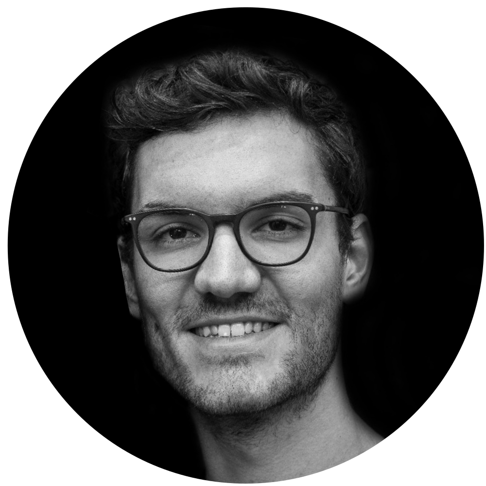

## About Me



I’m a simulation technology master student of university stuttgart. 

My key interest are **nonlinear continuum mechanis**, **parallel computing** (implementation of parallel numerical solver using *MPI*, *OpenCL* and *CUDA*), **isogeometric analysis** and **programming** (*C++*, *fortran*, *python*, *cmake*).